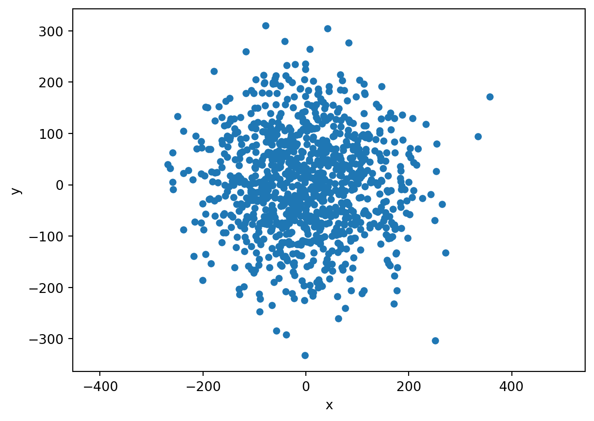

x_neu10.246170309600945Nun wollen wir diesen Zufallszahlengenerator random nutzen um eine Funktion zu entwickeln, welche einen beliebigen Punkt (mit einer x-/y-Koordinate) zufällig in einem definierten Umkreis verschiebt. Unser Fernziel ist es, den simulierten Datensatz aus “Datenqualität und Unsicherheit” zu rekonstruieren (siehe unten). Der erste Schritt dorthin ist es, einen gemeldeten Punkt (rot in Abbildung 28.1) in einem definierten Umkreis zu verschieben.

Das Ziel dieser Übung ist es also, dass wir eine Funktion entwickeln, die uns einen zufälligen Punkt in der Nähe eines Ursprungspunktes vorschlägt. Unser Vorgehen: Wir addieren jedem Koordinatenwert (x/y) des Ursprungspunktes einen Zufallswert, zum Beispiel zwischen -100 bis +100.
Bevor wir mit Koordinaten arbeiten wollt ihr euch zuerst mit dem Modul random vertraut machen. Importiere das Modul random und generiere eine Zufallszahl zwischen -100 und +100 aus einer uniformen Verteilung sowie aus einer Normalverteilung mit Mittelwert 100 und Standartabweichung 20.
Nun wollen wir uns den Koordinaten zuwenden. Erstelle als erstes zwei Dummykoordinaten x_start und y_start mit jeweils dem Wert 0. Diese sollen als “Ursprungskoordinaten” dienen.
Generiere nun eine Zufallszahl, die aus einer Normalverteilung stammt und die in etwa zwischen -100 und +100 liegt. Weise diese Zahl der Variabel x_offset zu. Generiere danach eine zweite Zufallszahl (auf die gleiche Art) und weise diese y_offset zu.
Überlege dir, welcher Mittelwert Sinn macht um Werte zwischen -100 und +100 zu bekommen. Welche Zahl liegt zwischen -100 und +100?
Überlege dir als nächstes, welche Standartabweichung sinnvoll wäre. Zur Erinnerung: Etwa 68% der Werte liegen inerhalb von +/- 1 Standartabweichung (SD), 95% innerhalb von +/- 2 SD, 99% innerhalb von 3 SD (siehe unten):
Addiere nun die Zufallszahlen x_offset und y_offset jeweils zu den Dummykoordinaten x_start und y_start und weise diese neuen Koordinaten x_neu und y_neu zu. Die neuen Werte stellen die leicht verschobenen Ursprungskoordinaten dar. In meinem Fall sind diese um 10.2 Meter nach Osten (positiver Wert) bzw. 4.4 Meter nach Süden (negativer Wert) verschoben worden.
x_neu10.246170309600945y_neu-4.443904000288846import pandas as pd
mypoints = pd.DataFrame({
"x": [x_start, x_neu],
"y": [y_start, y_neu],
"typ": ["start", "neu"]
}
)
from matplotlib import pyplot as plt
mypoints.plot("x", "y", kind = "scatter", xlim = [-100, 100], ylim = [-100, 100], c = ["red", "blue"], title = "Ursprung (rot) und Simulation (blau)")<AxesSubplot:title={'center':'Ursprung (rot) und Simulation (blau)'}, xlabel='x', ylabel='y'>Nun haben wir das zufällige Verschieben eines Einzelpunktes am Beispiel einer Dummykoordinaten (0/0) durchgespielt. In der nächsten Aufgabe (Kapitel 29) werden wir alle unsere Zeckenstichkoordinaten auf diese Weise zufällig verschieben um einen simulierten Zeckenstichdatensatz ähnlich wie Abbildung 28.1 zu erhalten.
Dafür brauchen wir die eben erarbeiteten Einzelschritte als Funktion, um diese auf alle Zeckenstiche anwenden zu können.
Erstelle jetzt eine Funktion namens offset_coordinate welche als Input eine x oder y-Achsenwert annimmt und eine leicht verschobene Wert zurückgibt.** Integriere die Standartabweichung der Verteilung als optionalen Parameter mit dem Namen distance und einem Defaultwert von 100.
# die Funktion sollte so funktionieren:
offset_coordinate(x_start)-216.6796450518075Nun ist es wichtig, dass wir unser Resultat visuell überprüfen. Im Beispiel unten wende ich die in der letzten Übung erstellte Funktion offset_coordinate() 1’000 mal auf die Dummykoordinate an. Nutze deine Funktion offset_coordinate um eine Visualisierung gemäss untenstehendem beispiel zu machen.
x_neu_list = [offset_coordinate(x_start) for i in range(1, 1000)]
y_neu_list = [offset_coordinate(y_start) for i in range(1, 1000)]
# Liste in eine Pandas DataFrame überführen
mysim = pd.DataFrame({"x" : x_neu_list, "y" : y_neu_list})
mysim.plot("x", "y", kind = "scatter")
from matplotlib import pyplot as plt
plt.axis("equal")(-411.00593298143457,
435.30097103004425,
-313.0600253232255,
330.13798227863623)